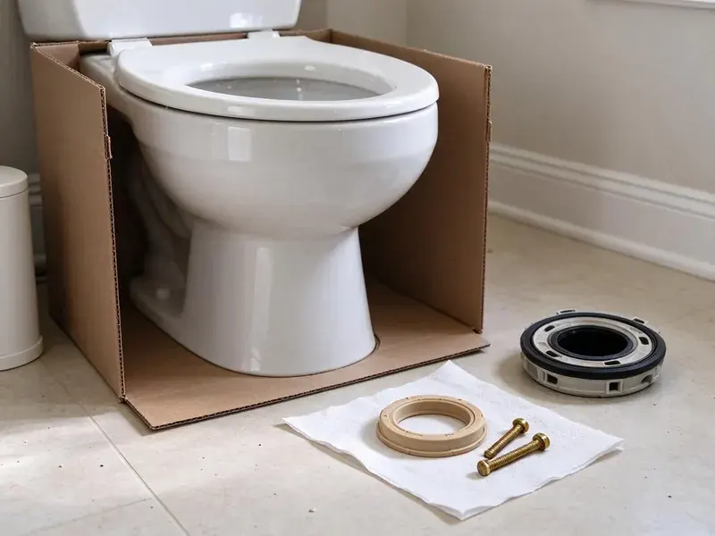

Shower Repair in Junction City, KS
Hard water clogs showerheads and wears out valve cartridges quickly. We repair showers in Junction City, KS and get your water flowing comfortably again.
- Same-Day Shower Repairs
- Accurate Diagnostic Services
- Prompt, Local Plumbers
- Upfront Flat-Rate Pricing

Need Professional Shower Repair in Junction City, KS?
Our team is standing by to assist you with any shower emergency or repair need.
Shower Repair for Valves, Heads and Leaks in Junction City, KS
KRV Plumbing handles all types of shower repair for homes across Junction City, KS. Whether you are dealing with a leaky showerhead, a clogged drain, or fluctuating water temperatures, our skilled technicians have the tools and experience to diagnose and fix the problem efficiently.
Our expertise includes:
- Shower pan and wall leak detection with moisture testing
- Repairing hot and cold water issues
- Fixing leaks in shower heads, valves, and diverters.

Additional Bathroom Plumbing Services in Junction City, KS
From toilets to showers, our bathroom plumbing team in Junction City, KS repairs, installs, and replaces every fixture with clean, code-compliant work.


Customers
Why Choose KRV Plumbing for Shower Repair in Junction City, KS?
We take pride in clear communication and honest pricing for every shower repair job. You will know exactly what to expect before any work begins, with no hidden fees.
- Correct Cartridges, We match the exact cartridge to your valve brand and model.
- Skilled Technicians, Our plumbers are licensed, insured, and continuously trained on the latest repair techniques and plumbing codes.
- Local Expertise, Our team is familiar with plumbing in Junction City, including common issues like mineral scaling and settling soil.
Citywide Coverage
We repair showers in every neighborhood of Junction City, from older homes with original valves to newer homes with thermostatic systems. Same-day appointments are often available.
Experienced Team
Our plumbers repair shower valves every day and know the quirks of Moen, Delta, Kohler, Pfister and Symmons models. They can often identify a valve by its trim alone.
Safety-First Approach
We shut off water and protect tile and tubs before opening a valve. Anti-scald limit stops are set to help keep water at a safe temperature.
Trusted Certified Junction City Plumbing Services Professionals
At KRV Plumbing, we take pride in providing licensed, certified plumbing services throughout Junction City, KS. Backed by leading industry credentials, our experienced plumbers combine technical skill with genuine customer care. Whether it is repair, installation, or maintenance, we follow strict safety and quality standards to deliver lasting results you can trust.
Call Us Now PHCC Plumbing Contractor Recognition
PHCC Plumbing Contractor Recognition Better Business Bureau (BBB) Accreditation
Better Business Bureau (BBB) Accreditation Angi Certified Pro
Angi Certified Pro ISO 9001 Quality Management Certification
ISO 9001 Quality Management CertificationReliable Shower Repair Services in Junction City, KS
Emergency Shower Leak Repair in Junction City
A severe shower leak can fast cause extensive water damage to walls, floors, and ceilings. If you have a sudden, uncontrollable shower leak in your Junction City home, do not wait. Our emergency plumbing team is available to respond quickly, locate the source of the leak, and perform immediate repairs to prevent further damage. We arrive with the right tools and parts to address urgent plumbing problems.

Faulty Shower Valve Repair in Junction City
Problems with your shower's water temperature or pressure often point to a malfunctioning mixing valve or cartridge. These components control the hot and cold water flow. Our technicians are skilled in diagnosing valve issues and can repair or replace them, ensuring you get consistent water temperature and pressure every time you shower. We work with all major valve makers.
Hot Water Pressure Issues in Junction City, KS
Lack of hot water or weak hot water pressure in your shower can be incredibly frustrating. This can stem from several issues, including a failing water heater, sediment buildup in the pipes, or a problem with the shower mixing valve itself. Our technicians will diagnose whether the issue is with your water heater, a blocked pipe, or a faulty component within the shower. We provide effective solutions to restore consistent hot water flow and pressure.
Moen and Delta Shower Repair in Junction City, KS
Many homes in Junction City feature Moen or Delta shower fixtures, known for their quality but still subject to wear and tear. Our plumbers are highly experienced in repairing and sourcing parts for these popular brands. Whether it is a leaky single-handle cartridge or a diverter issue, we have the specialized knowledge to fix your Moen or Delta shower correctly.
Clogged Shower Drain Solutions in Junction City, KS
Slow or standing water in your shower is a clear sign of a clogged drain. These clogs are usually caused by a buildup of hair, soap scum, and sometimes mineral deposits. Our team uses professional drain snakes and hydro-jetting equipment to safely and effectively clear even the most stubborn blockages without damaging your pipes. We also offer advice on preventative measures to keep your shower drains flowing freely.
Showerhead Repair and Replacement in Junction City
A malfunctioning showerhead can spray erratically, have reduced pressure, or even leak. Often, mineral deposits from the water supply can clog the nozzles, or internal components can wear out. We can clean, repair, or replace your showerhead with a new, efficient model. We offer options from standard to rain showerheads, ensuring proper installation for strong performance and water conservation.
Shower Faucet Leak Fixes in Junction City
Beyond the shower head, leaks can occur at the faucet handles or behind the wall. These leaks can be harder to spot but can cause significant damage if left unaddressed. We use modern diagnostic tools to pinpoint the exact location of the leak and provide precise repairs, often involving O-ring replacement or tightening connections, preventing expensive water damage to your home's structure.

Shower Drain Repair in Junction City
Slow shower drains are typically clogged with hair and soap scum, often hardened by mineral deposits. We clear the drain with augers and check the drain assembly for leaks. Loose or cracked drain bodies can let water seep under the pan. We repair or replace drain components when needed.
Shower Repair Near Me in Junction City, KS
If you are searching for shower repair near me, you want a plumber who can fix it quickly. KRV Plumbing carries cartridges for the most common valves in Junction City homes. Most repairs are done in one visit.
Never let a leaky or malfunctioning shower disrupt your daily life. Our local plumbers are familiar with the plumbing systems and common issues found in homes across Junction City. We are focused on delivering high-quality, convenient shower repair services right to your doorstep.
KRV Plumbing at a Glance
- Fully licensed plumbing team covering Junction City, KS
- Same-day appointments and 24/7 emergency response
- Clear written estimates, no hidden fees
- 4.9-star rated by 910+ Kansas customers
Junction City Map
Junction City Information
- Population
- 21,856
- Area codes
- Local
- Service area
- Junction City and communities within 40 miles
- Nearby
- Manhattan, Salina, Emporia, Topeka
A lot of Kansas housing dates from the mid-century building boom, with galvanized steel supply lines and cast iron drains. Effective shower repair is crucial for homes in Junction City, KS, where mineral buildup and outdated plumbing can make timely maintenance essential for comfort and property value.
Expert Services
Trust our professionals for reliable KRV Plumbing solutions in Junction City, KS.
Our Specialized Plumbing Services in Junction City, KS
At KRV Plumbing, we provide a complete range of plumbing services across Junction City, KS. From leak detection to full system installations, our team ensures fast, precise, and affordable service for both residential and commercial properties. Explore our core services below:


How Our Shower Repair Process Works in Junction City, KS
Shower repair should be fast and clear. Here is how we get your shower working again.
Request a Quote
Call (316) 229-8459 or fill out our online form to schedule your shower repair service. Our friendly staff will gather details about your issue and set up an appointment that fits your schedule.
Diagnosis & Estimate
A certified plumber will arrive at your home to carefully inspect your shower and diagnose the problem. We will explain our findings and provide a clear, upfront estimate for the repair work.
Expert Repair
Once approved, our technician will proceed with the repair using quality parts and industry best practices. We work carefully to restore your shower with minimal disruption to your home.
Frequently Asked Questions About Shower Repair in Junction City
The cost of shower repair in Junction City, KS varies widely depending on the complexity of the issue. Simple fixes like replacing a washer can be $100 to $250, while more involved repairs like replacing a shower valve might range from $300 to $800, including parts and labor. We always provide a clear estimate before beginning any work.
Leaks behind the wall are often due to a faulty shower valve, loose pipe connections, or cracks in the shower pan or tile grout. These leaks can be serious, leading to mold growth and structural damage. Our team uses specialized detection equipment to pinpoint the leak source and repair it with minimal wall disruption.
Low water pressure can be caused by mineral buildup in the shower head or pipes, a faulty pressure-balancing valve, a partially closed main water valve, or even issues with your home's water heater. Our plumbers can diagnose the exact cause.
A stuck or worn pressure-balance spool often causes temperature swings when other fixtures are used. Replacing the cartridge or valve usually solves it.
Regular maintenance can help. Use a drain protector to catch hair, avoid harsh chemical drain cleaners, and clean your showerhead now and then to remove mineral buildup. Many Kansas homeowners use water softeners to extend the life of their tank water heaters and fixtures against heavy mineral buildup. If your water is hard, consider a whole-home water softener to protect all your plumbing fixtures.
Minor repairs like replacing a showerhead or cartridge usually do not require a permit. However, extensive work such as relocating plumbing lines, replacing major sections of piping, or a full bathroom remodel might require one. KRV Plumbing can advise you on permit requirements for your specific repair.
While some minor issues like a clogged showerhead might be DIY-friendly, most shower repairs, especially those involving water pressure, valve replacement, or significant leaks, are best left to a professional. Improper repair can lead to costly water damage or code violations. For homeowners in Junction City, KS, it is safer to call KRV Plumbing.
Most common shower repairs, like fixing a leaky faucet or clearing a drain clog, can be completed within 1 to 3 hours. More complex issues, such as replacing a shower valve that requires wall access, might take half a day or longer. We aim for prompt service to minimize disruption.
What People Are Saying About Our Plumbing Experts?

Laura S.
I scheduled a water heater replacement, and the team made the process smooth and affordable. The new unit works perfectly, and they cleaned up after completing the job.
Water Heater Replacement · Hutchinson, KS
Mark T.
When our office needed drain cleaning, KRV Plumbing provided quick, reliable service. The plumber arrived on time and made sure every drain flowed perfectly before leaving. Very satisfied.
Drain Cleaning · Emporia, KS
Patricia H.
We had a slab leak that two other companies could not find. KRV Plumbing located it in under an hour, explained our options, and the price matched the quote to the dollar.
Slab Leak Repair · Salina, KS
James P.
Our commercial plumbing system had a leak under the sink, and KRV Plumbing handled it professionally. The plumbers arrived quickly and restored everything without disruption to our customers.
Commercial Plumbing · Manhattan, KS
Daniel K.
A pipe burst at 11 pm and they actually answered. The plumber showed up within the hour, shut everything down, and had us back to normal the next morning. Could not ask for more.
Emergency Plumbing · Lawrence, KSRobert G.
The trenchless sewer replacement saved our front yard. They walked us through the camera inspection footage first so we knew exactly what we were paying for.
Sewer Line Replacement · Lawrence, KS